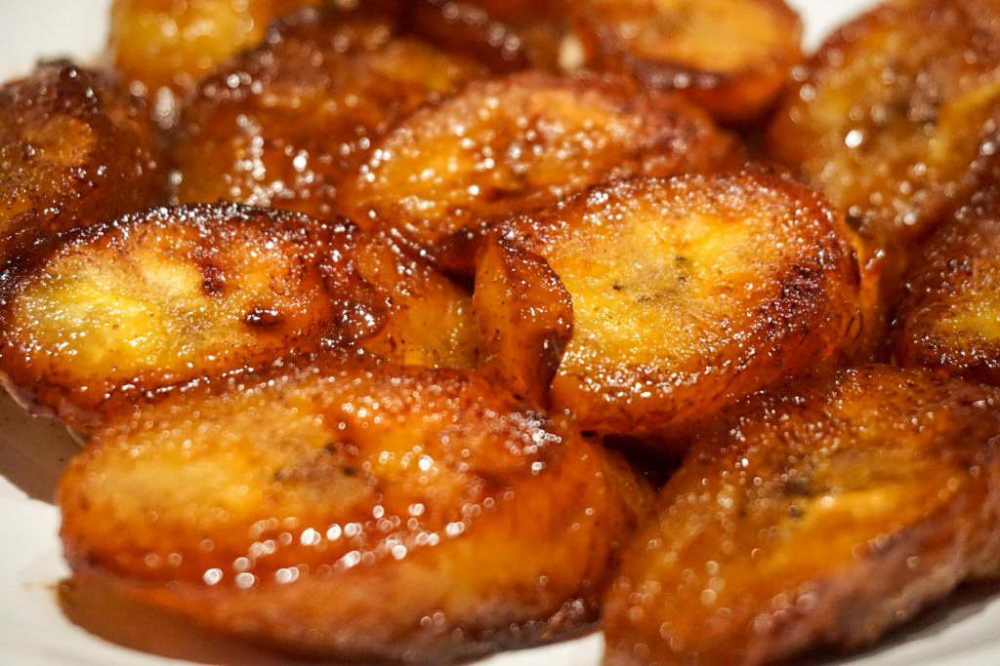

Maduros Cubanos

Description
Sweet plantains, or maduros, are a staple in Cuban cuisine. Grandma C. would
always have either maduros or tostones on the side of our rice, beans, and breaded
steak. Super simple recipe down below!
Ingredients
- 1 1/2 lbs very ripe plantains (should be black/brown)
- 1/2 cup cooking oil
Steps
- Heat the oil over medium heat in a large nonstick skillet.
- Peel the plantains by trimming the ends, slicing just through
the skin down one side, and removing the peel. Cut into angled
slices approximately 1-1 1/2" thick.
- Place the plantains into your skillet close together, but not
touching, and cook for about two minutes per side, until they are soft.
- Reduce the heat to medium low, and cook an additional 20-25 minutes, turning
occasionally until uniformly golden brown.
The color comes from the sugar caramelizing as the plantains cook.
- Place on a paper-towel lined plate briefly to drain and serve immediately.
Back to main page